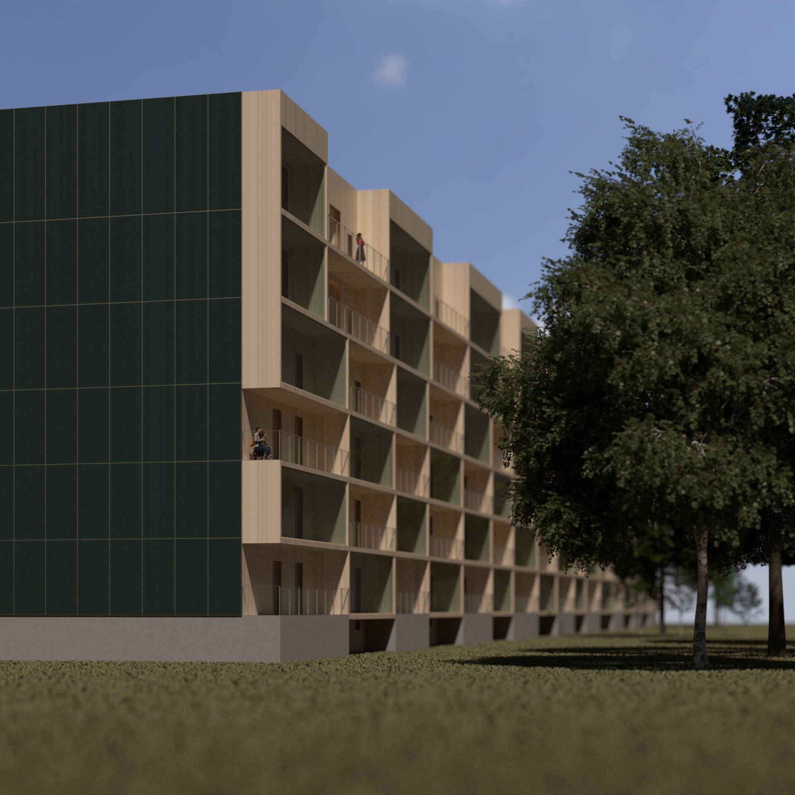
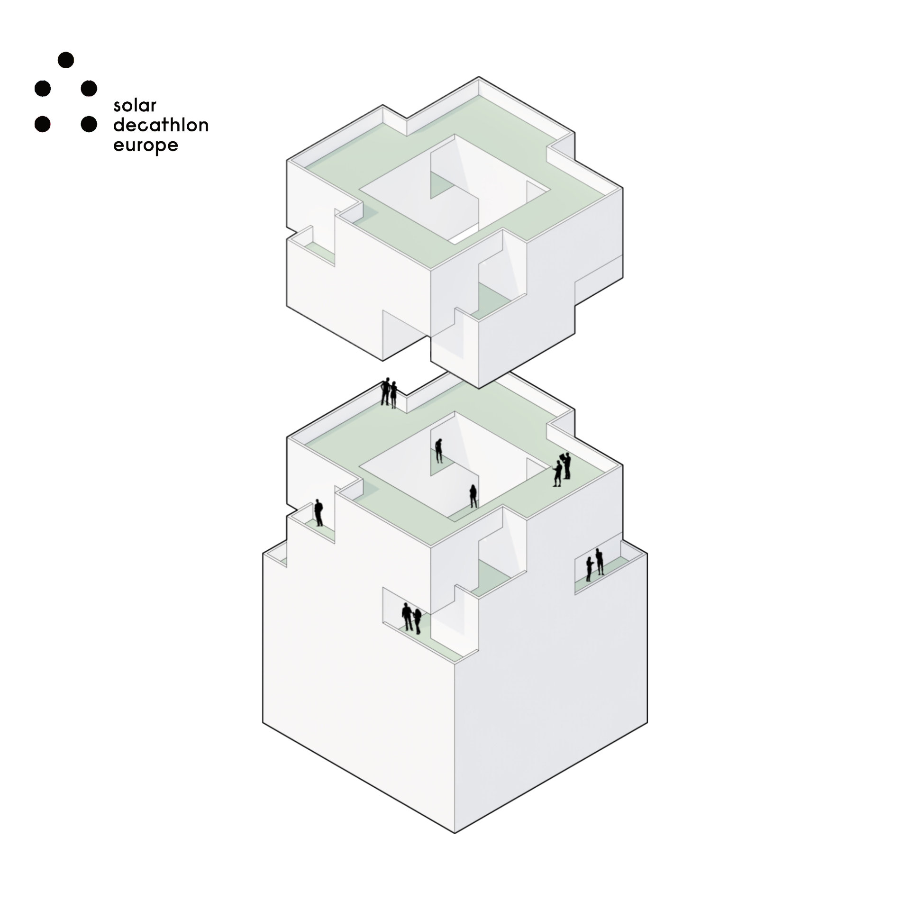
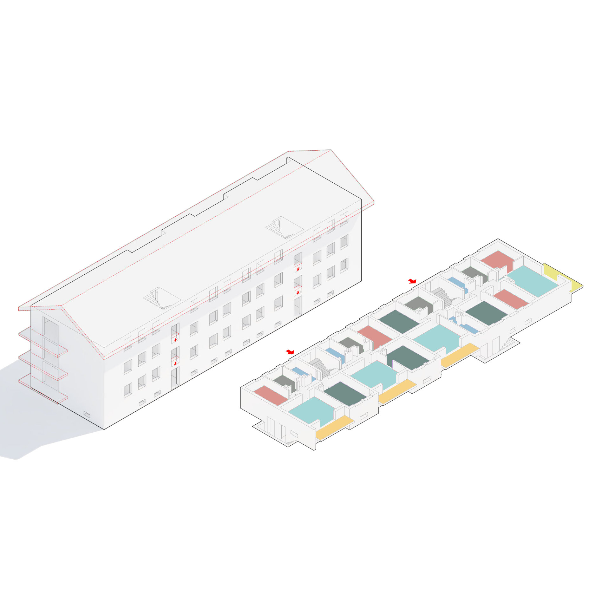

Solar Decathlon Europe 22
2019
⬤ Im Rahmen der Bewerbung der Technischen Hochschule Rosenheim für den Solar Decathlon Europe 2022
in Wuppertal entwickelt dieser Semesterentwurf innovative Lösungen für die Nachverdichtung
bestehender Mehrfamilienhäuser. Ziel ist bezahlbarer Wohnraum, Klimaneutralität bis 2050 und
nachhaltiger Ressourcenumgang.
Die Entwürfe fokussieren die Transformation des größten deutschen Gebäudestocks (1950er-70er
Jahre) durch Aufstockung in Holzmodulbauweise ohne Versiegelung neuer Flächen. Zentrale
Herausforderungen – Energieüberschussproduktion (Plus-Energie),
Cradle-to-Cradle-Materialkreisläufe und sozialverträgliche Verdichtung – werden in studentischen
Team-Entwürfen adressiert.
Konzeptionelle Schwerpunkte umfassen modulare Aufstockungssysteme, Urban-Mining-Design für
vollständige Rückbaubarkeit und multifunktionale Gemeinschaftsräume zur Stärkung des sozialen
Zusammenhalts. Die Entwürfe bereiten die Wettbewerbsteilnahme vor, bei der 18 internationale
Teams praxisreife Lösungen für die Energiewende im Quartier demonstrieren.
Der Semesterentwurf verbindet architektonische Innovation mit ingenieurwissenschaftlicher
Präzision – als Vorstudie zum späteren SDE21-Raummodul und Cradle-to-Cradle-Konzept.
⬤ As part of Rosenheim Technical University's application for Solar Decathlon Europe 2022 in
Wuppertal, this semester project is developing innovative solutions for the redensification of
existing apartment buildings. The goal is affordable housing, climate neutrality by 2050, and
sustainable use of resources.
The designs focus on transforming Germany's largest building stock
(1950s-1970s) by adding stories using modular timber construction without sealing new areas. Key
challenges—energy surplus production (plus energy), cradle-to-cradle material cycles, and
socially acceptable densification—are addressed in student team designs.
Conceptual focal points
include modular extension systems, urban mining design for complete dismantling, and
multifunctional community spaces to strengthen social cohesion. The designs prepare for the
competition, in which 18 international teams will demonstrate practical solutions for the energy
transition in the neighborhood.
The semester design combines architectural innovation with
engineering precision – as a preliminary study for the later SDE21 space module and
cradle-to-cradle concept.
Prof. Dr.-Ing. J. Stopper
Prof. M. Wolf
(bergmeisterwolf)